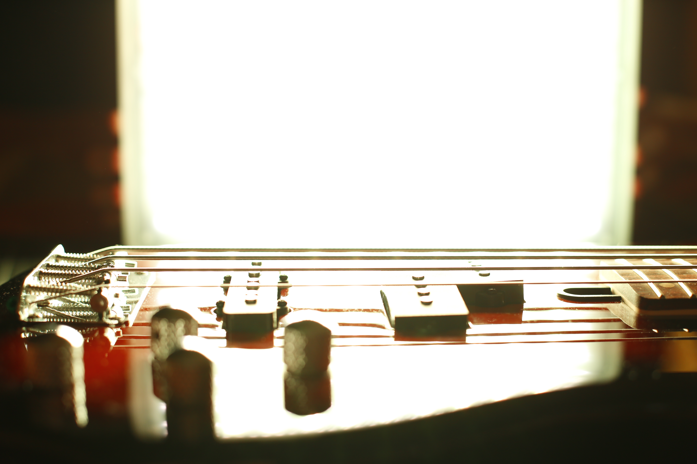
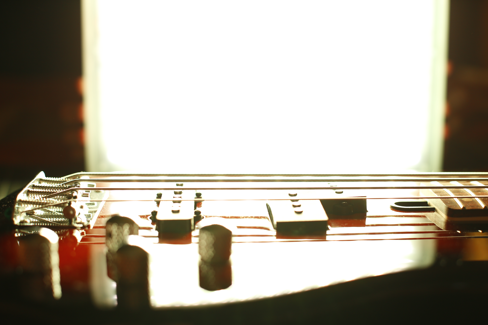
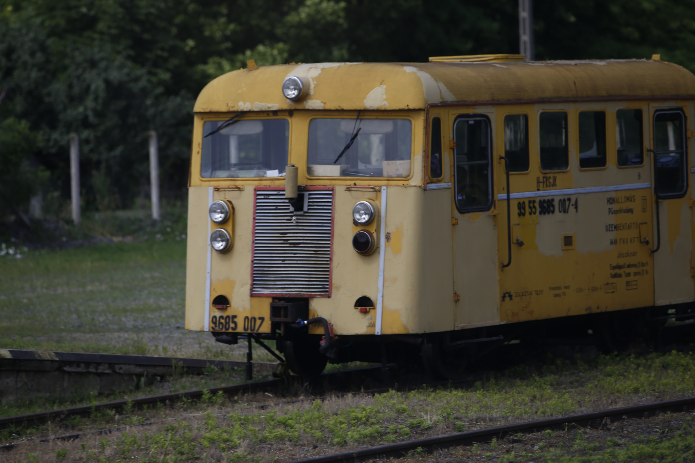
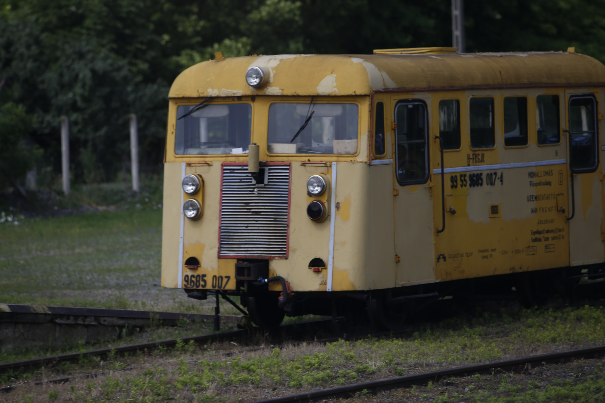
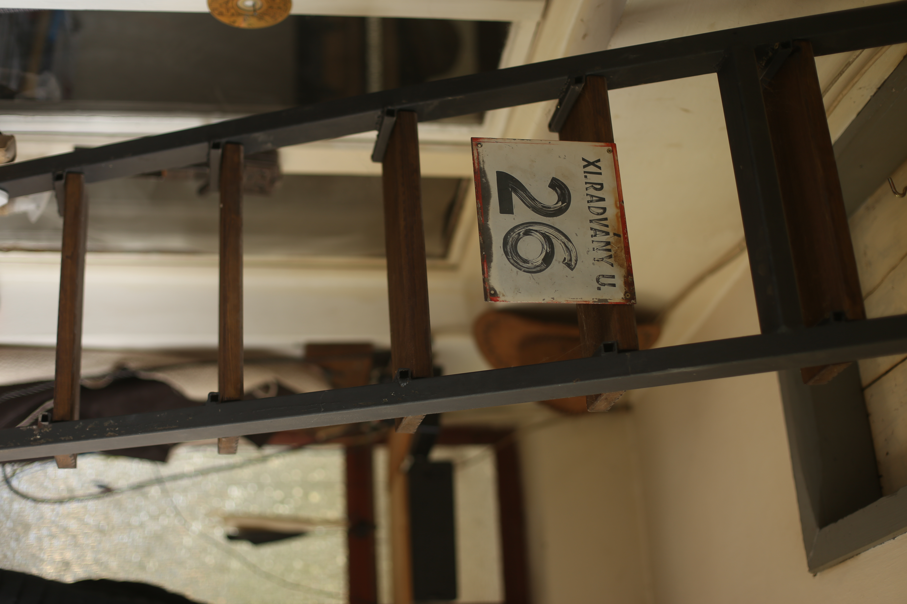
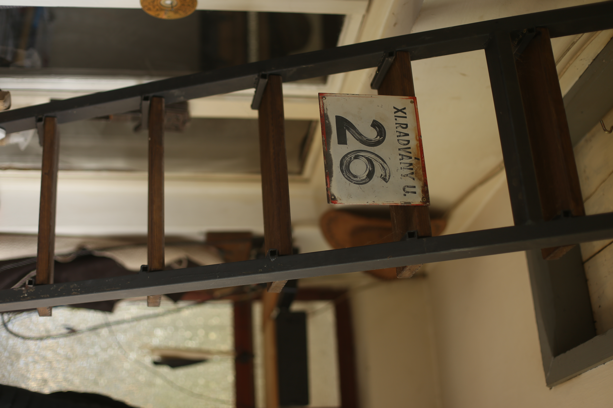
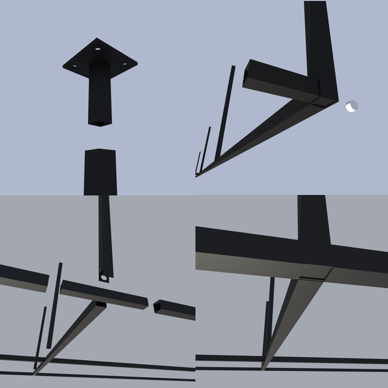
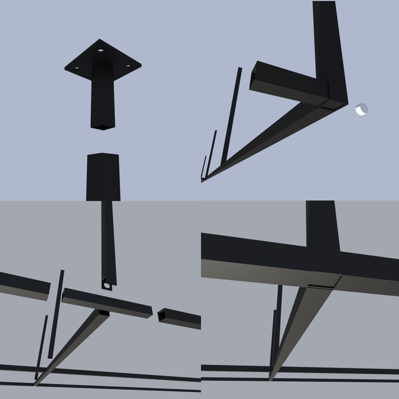
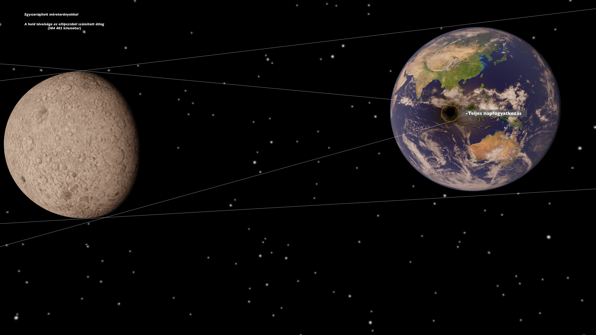
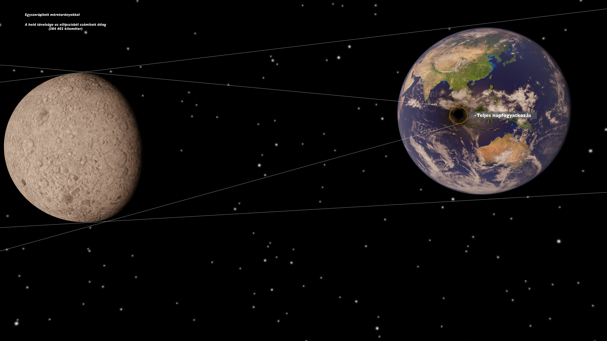

Fotózás
Hobby szinten fotózom utazásokon, kirándulásokon és bulikon általában nem megrendelésre. Egy Canon 6D típusu fényképezőgépünk van melyet közösen használok édesapámmal, ő tanított meg annak idején használni is.
A géphez van egy 50mm-es 1:1.4 fényerejű fix objektívünk, egy 70-200mm-es 1:2.8 fix fényerejű teleobjektívünk és egy 16-35mm-es 1:2.8 fix fényerejü nagylátószögű objektívünk,
a késöbbiekben egy beruháznék még egy makro objektívre is.


 

 



Heggesztés
Születésem elött körülbelül 2 évvel a családom vett a Budaörsi "hegyoldal" tetején egy telket, melyen azelött szőlőt termesztettek de már bejárhatatlan állapotben volt. Szépen lassan elkezdték rendezgetni és ahogy teltek az évek más telkek hozzá vásárlásával kb. 5000m2-re bővítettük.
Gyerekkoromtól elkezdve mindíg volt mit dolgozni ezen a telken, és miután szépen rendbe volt már téve a kert, elkezdtünk parkosítani. Ahogy kezdtek kialakulni a dolgok, jöttek az egyre érdekesebb munkák.
Kissebb-nagyobb betonozások, a viz és csatorna bevezetése egy kb. 200m hosszú magánúton keresztűl mivel nem volt közvetlen közműkapcsolatunk. Két présház van a telken, ezeket laktuk be így az egyik házat egy könnyűszerkezetes fürdőszobával is kibővítettük.
A heggesztést eleinte egy régi barátunk csinálta nekünk, de ez nagyon kültségesnek bizonyult hosszútávon ezért ő ajánlott egy Iweld Gorilla Pocketmig195 típusu kompakt inverteres heggesztő gépet, hogy azt vegyük meg és megtanít hogyan használjam. Itt kezdődőtt a heggesztő "karrierem".
Ismerősökön keresztül megrendelésre is dolgoztam kétszer, és az eredménnyel mindkétszer elégedettek voltak.


 

 

3D modellezés
Középískolás koromban hívta fel bátyám a figyelmemet egy Blender nevü 3D grafikus programra. Egyböl beleszerettem e 3D-zésbe és azóta tanulom youtube-videók segítségével. a program akkor még kezdetleges volt de mára egy szinvonalas 3D grafikus programmá fejlődött ami akár olyan világszinvonalú programokkal is felveheti a versenyt mint a Maya vagy a 3ds Max.
A lenti képeken néhány munkám látható.


 
